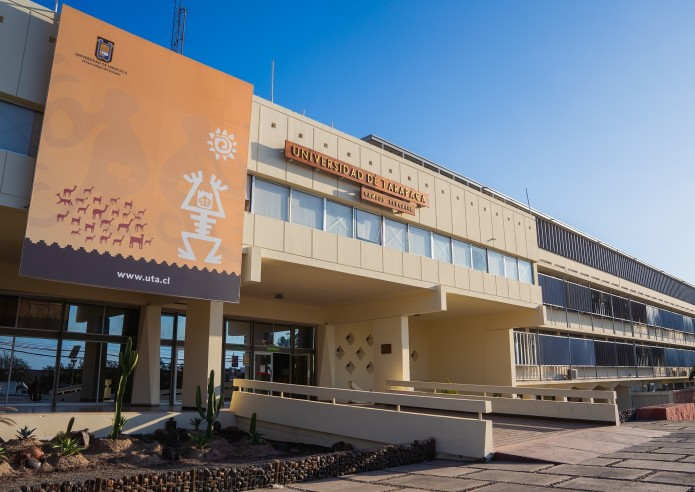
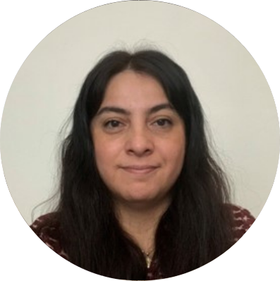

VI Congreso
Sociedad Chilena de Educación Científica
Pluralidad: Corazón de la educación científica para futuros más justos
VI congreso de la Sociedad Chilena de Educación Científica
Fecha
5, 6 y 7 de noviembre de 2025Lugar
Universidad de Tarapacá,Arica, Región de Arica y Parinacota, Chile.


❮
❯
Circulares VI Congreso CChEC
Primera Circular
Fecha: 11 de febrero 2025
Segunda Circular
Fecha: 04 de abril 2025
Tercera Circular
Fecha: 29 de junio 2025
Inscripción
Formulario de inscripcion|
Costos de inscripción (Valores en pesos chilenos) |
Hasta el 05 de octubre | Desde el 06 de octubre | ||
|---|---|---|---|---|
| No socio | Socio | No socio | Socio | |
| Académicos e investigadores | $70.000 | $50.000 | $90.000 | $70.000 |
| Estudiantes de postgrado | $50.000 | $30.000 | $60.000 | $40.000 |
| Profesores y educadores del sistema escolar | $20.000 | $10.000 | $25.000 | $15.000 |
| Estudiante de pregrado | $15.000 | $5.000 | $20.000 | $10.000 |
|
Costos de inscripción (Valores en pesos chilenos) |
Hasta el 05 de octubre | Desde el 06 de octubre | ||
|---|---|---|---|---|
| No socio | Socio | No socio | Socio | |
| Académicos e investigadores | $90.000 | $60.000 | $120.000 | $90.000 |
| Estudiantes de postgrado | $60.000 | $40.000 | $80.000 | $60.000 |
| Profesores y educadores del sistema escolar | $30.000 | $15.000 | $40.000 | $25.000 |
| Estudiante de pregrado | $20.000 | $5.000 | $25.000 | $10.000 |
Sobre Arica
asdf
qewr
Contacto
Puedes contactarnos por nuestras redes o al correo del congreso:
congresoschec [at] gmail.com